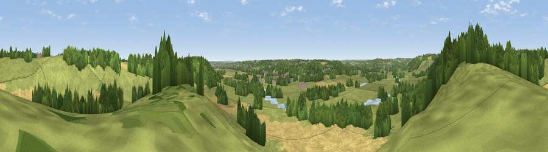

Viewpoint near Mapledurham
#30737 in England · top 32% of its area beats it · near MapledurhamThe view, rendered

A 360° render of this exact spot computed from the terrain model, tree cover and land cover — summer colours, afternoon light, calibrated against photographs of famous viewpoints. Real trees, hedges and buildings will differ in detail.
The panorama
Grey silhouette: terrain skyline in each direction (720 bearings, Earth curvature and refraction included). Dashed green: skyline with trees (+15 m) and buildings (+8 m) as obstacles. Blue strip: how far the ground is visible on each bearing.
Where the view opens
Wedge length = distance to the farthest visible ground on that bearing (vegetation-aware). Rings at 10, 25 and 50 km.
What fills the view
52% grassland · 25% woodland · 19% cropland · 2% built-up · 2% water
Angular shares of the visible panorama (visual magnitude), not map area. Landscape diversity 0.51 (0–1 Shannon).
Key numbers
More beautiful places nearby
The staircase of upgrades: each row has a higher view potential than everything closer. Driving times are estimates from straight-line distance, calibrated against real road routing — check an actual route before setting out.
| Place | Direction | Drive | Score |
|---|---|---|---|
| Viewpoint near Mapledurham | NW · 1 km | ~2 min | 46.6 |
| Viewpoint near Whitchurch-on-Thames | W · 3 km | ~7 min | 55.0 |
| Viewpoint near Streatley | WNW · 9 km | ~17 min | 57.3 |
| Viewpoint near Moulsford | WNW · 10 km | ~19 min | 58.8 |
| Viewpoint near Nuffield | N · 11 km | ~22 min | 62.3 |
| Viewpoint near Compton | WNW · 13 km | ~25 min | 64.1 |
| Viewpoint near Cookley Green | N · 14 km | ~25 min | 64.3 |
| Viewpoint near Cookley Green | N · 14 km | ~26 min | 68.5 |
51.49364, -1.04026 · source: screening · position refined by local search. Computed location — check access rights before visiting.